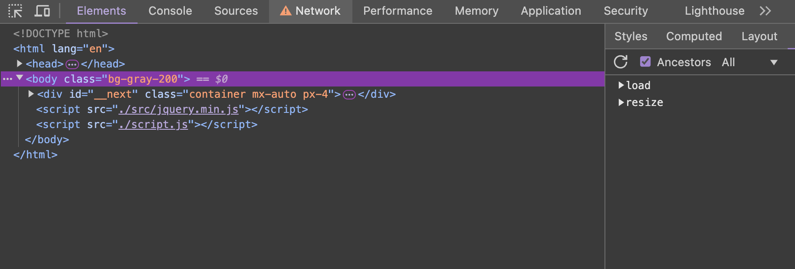
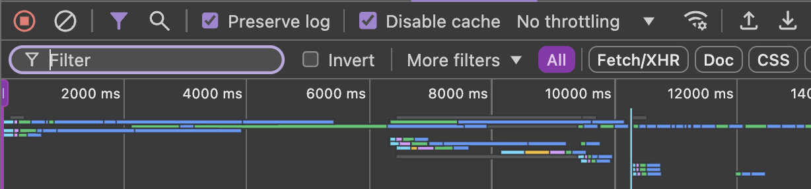
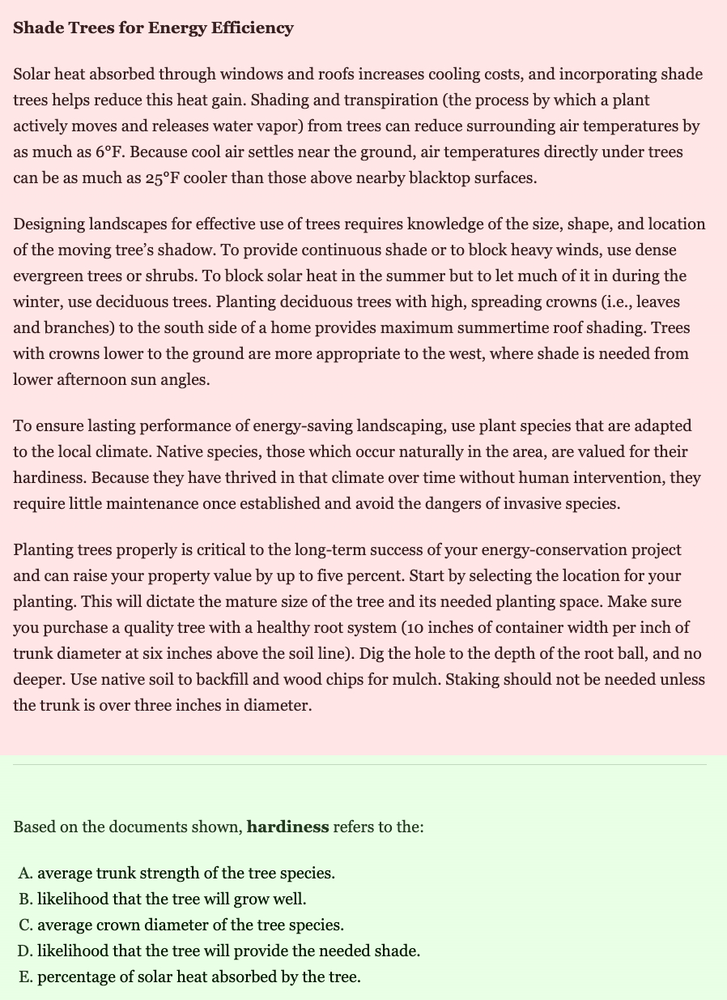

Firstly, this requires the Inspect Tool common in most browsers by using CTRL + I (CMD + OPTION + I, for mac). Then you must go to the Network tab seen at the top:
Once you get there, and are on workkeyscurriculum.act.org, you then should go to the filter search bar:
Look for files named web.json. These relate to your personal account, so they will vary, however they all still should be the same in most ways.
Click on each of them and make sure you are on the Resource tab on the right side when you click it. Once you start doing that, look for a one that resembles this:
[
{
"id": 764845,
"question_category_id": 25106,
"question_family_id": null,
"content_location": "content_packages:1413:questions:764845",
"correct_answer": "Qw==",
"choices_count": 5,
"external_id": "I00067_2075.xml",
"question_type": "SMC",
"popular_answer": null,
"order": 4,
"content_preview": null,
"answer_content": "PHA+4oCcZXhwbGFpbiB0aGUgcnVsZXMgYWJvdXQgZW1wbG95ZWVzIHdobyBhcmUgcmVsYXRpdmVzLuKAnSBpcyB0aGUgY29ycmVjdCBhbnN3ZXIuPC9wPg==",
"question_content": "\u003cp\u003eYou work in the billing department at ABC Air. The main purpose of the policy shown is to:\u003c/p\u003e\n\u003col\u003e\n\u003cli\u003einstruct employees how to treat relatives who work at ABC Air.\u003c/li\u003e\n\u003cli\u003edescribe potentially stressful working conditions.\u003c/li\u003e\n\u003cli\u003eexplain the rules about employees who are relatives.\u003c/li\u003e\n\u003cli\u003eexplain why ABC Air never hires relatives of employees.\u003c/li\u003e\n\u003cli\u003edescribe the differences in family and work relationships.\u003c/li\u003e\n\u003c/ol\u003e",
"exam_id": 7311,
"approved_connections_ids": {},
"difficulty": "Easy",
"exam_section_id": null,
"study_duration": 120,
"elo_rank": 1082,
"hide_sidebar": false,
"highlight_selector": null,
"passage_id": 3553,
"question_version_id": 9517605,
"video_tracks": {},
"answer_container_type": "exam_result",
"question_voiceover_url": null,
"answer_voiceover_url": null,
"answer_choices": [],
"metadata": null,
"unscored": false,
"passage_version_id": 2887
},
...
(continues for a really long time)
]
Once you this file, simply CTRL + F (CMD + F, for mac) and search for the question you are looking for. IT MUST BE THE ANSWER QUESITON, NOT THE ACTUAL QUESTION, here shown below in green is what I mean:
Once you have found your question, look for the "correct_answer" json variable. This is encoded in Base64, you can easily decrypt it here:
Here is an example:
Qw== <-- BASE64
Converted: C <-- UTF-8, in readable string
And thats it! You can now easily get the answers yourself, however I'd recommend my website, since I went through the effort to get them all, and make them really fancy for you to easily understand and find each questiona and there answer. However, I do not know if they change there questions every year, hence why I listed this as 2025. But in the end, you know what to do now, so it's not really a big loss. Enjoy!